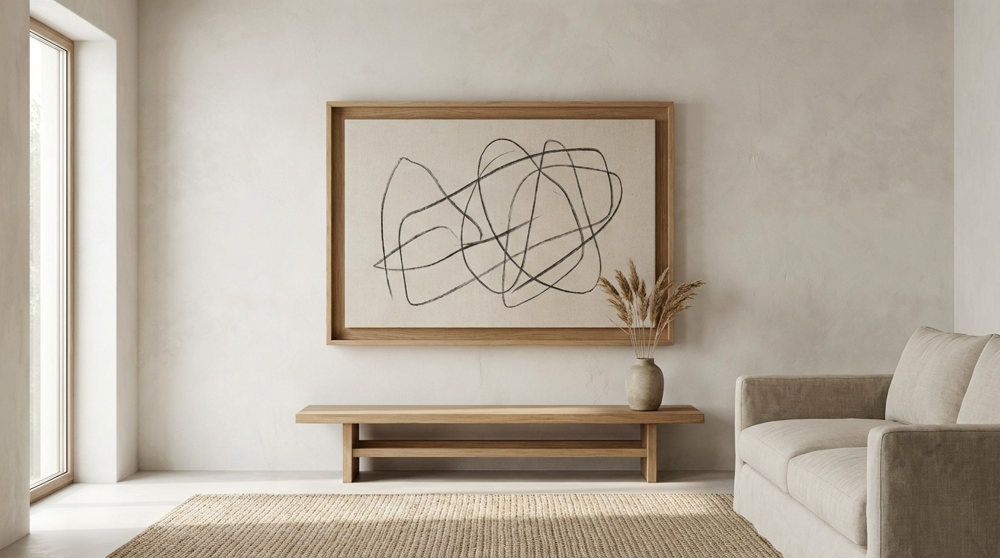

Introduction
Walls do more than hold art. They shape how a room feels, whether it is calm, bright, or grounded. Modern wall decor focuses on clarity. Instead of filling every inch, it uses negative space, scale, and a cohesive palette to make the room feel intentional. A single strong wall moment can transform an entire room.
The most successful modern walls are simple but not sterile. They combine clean forms with texture and a few personal details. The ideas below are practical, easy to apply, and designed to work in small or large rooms without adding clutter.
Before you hang anything, take a moment to notice the room's natural focal point. It might be the sofa, a fireplace, or the bed. Modern wall decor looks best when it supports that focal point rather than competing with it. This keeps the wall from feeling busy and helps the whole room feel more composed.
Modern Wall Decor Ideas
Choose a few ideas that fit your room and stop there. Modern walls feel best when each element has space to breathe.
1. Build a Balanced Gallery Wall
A gallery wall can feel modern when it is structured and cohesive. Use a consistent frame finish and a limited color palette so the collection reads as one calm composition.
- Keep frame finishes consistent for a clean look.
- Use a mix of sizes but align the outer edges for order.
- Limit the palette to two or three main tones.

Gallery wall inspiration.
2. Use One Oversized Art Piece
An oversized artwork creates a modern focal point without the complexity of multiple frames. It also makes smaller rooms feel more expansive by drawing the eye across a larger surface.
- Choose art that reflects the room's color palette.
- Center the piece at seated eye level for balance.
- Leave generous space around it to highlight the scale.
3. Add a Slim Picture Ledge
Picture ledges offer flexibility while keeping the wall clean. They allow you to layer art and objects without drilling multiple holes, and the depth stays minimal.
- Limit the ledge to two or three items for clarity.
- Lean pieces in varying heights for gentle movement.
- Keep the ledge finish close to the wall color.
4. Try a Pair of Modern Mirrors
Mirrors add light and depth, which makes a room feel larger. A pair of simple mirrors or a clean geometric shape can add symmetry without busy detail.
- Use two matching mirrors for a balanced look.
- Place them where they reflect natural light.
- Keep frames thin to maintain a modern feel.
5. Create a Subtle Accent Wall
A modern accent wall does not need a loud color. A soft tonal shift, limewash texture, or a narrow panel detail can add depth without overpowering the room.
- Choose a muted tone just a few shades deeper than the main wall.
- Use vertical panels to add height to low ceilings.
- Keep the rest of the room calm so the wall stands out.
6. Use Sculptural Wall Objects
Modern walls can feel artistic with a single sculptural object. A metal form, a woven piece, or a minimal ceramic wall element adds texture without clutter.
- Choose one sculptural piece per wall zone.
- Keep the material palette consistent with the room.
- Give the object plenty of negative space.
7. Layer Art With a Low Console
Leaning large art on a console creates a relaxed, modern look. It also allows you to change the art without committing to a fixed wall arrangement.
- Use one large piece and one smaller companion piece.
- Keep the console surface mostly clear.
- Add one simple object to balance the composition.
8. Use a Minimalist Grid Layout
A grid of four or six frames creates a clean and structured wall moment. This works well in living rooms, hallways, or above a bed where symmetry feels calming.
- Space frames evenly for a precise layout.
- Use similar artwork styles for visual unity.
- Keep the frames thin to avoid visual weight.

Minimalist wall art setup.
9. Introduce Texture With Wall Panels
Textured wall panels or simple slats add architectural interest. This modern detail works especially well behind a sofa or bed and adds depth without additional decor.
- Keep the panel color close to the wall for subtle depth.
- Limit the panel to one wall for a clean look.
- Pair with minimal decor to let the texture lead.
How to Style Walls Modernly
Start With Scale and Proportion
Modern wall decor looks best when the scale matches the furniture below it. A small piece above a large sofa feels lost, while a larger piece creates balance. Think of wall decor as an anchor for the room.
- Choose art that is about two-thirds the width of the furniture below.
- Hang pieces at seated eye level for comfort.
- Leave consistent spacing around each item.
If the room has multiple zones, treat each zone separately. A dining nook or reading corner can have a smaller, more intimate wall moment, while the main seating area gets the larger focal piece.
Limit the Palette and Materials
Modern styling is clear and cohesive. Use a restrained palette and repeat materials so the walls feel connected to the rest of the room.
If you are unsure about materials, start with two: a warm wood tone and a matte black or soft metal. Repeat those finishes in frames, shelves, or sconces. This small amount of repetition makes the wall feel designed even when the art itself is varied.
- Pick two main tones and one accent tone.
- Repeat one frame finish or material across the room.
- Avoid mixing too many patterns on the same wall.
Use Negative Space Intentionally
Empty wall space is part of the design. It allows the featured pieces to stand out and keeps the room from feeling busy.
Think of negative space as a visual pause. When each wall moment has breathing room, the room feels more modern and easier to read at a glance. If a wall feels crowded, remove the smallest item and reassess.
- Leave open space around statement pieces.
- Stop adding decor when the wall feels complete.
- Use empty space to create contrast and calm.
Common Mistakes to Avoid
Modern wall decor is simple, but a few missteps can make it feel cluttered or unfinished.
- Hanging art too high so it feels disconnected from the furniture.
- Using too many small pieces instead of fewer statement items.
- Mixing too many frame finishes on one wall.
- Filling every wall without leaving negative space.
- Ignoring scale and using decor that feels too small.
Conclusion
Modern wall decor works best when it is intentional. Choose one strong focal point, build around it with a few clean details, and let the wall breathe. The result is a room that feels curated, calm, and modern.
Start with scale, keep the palette refined, and edit often. A few thoughtful choices can transform any room without adding clutter.